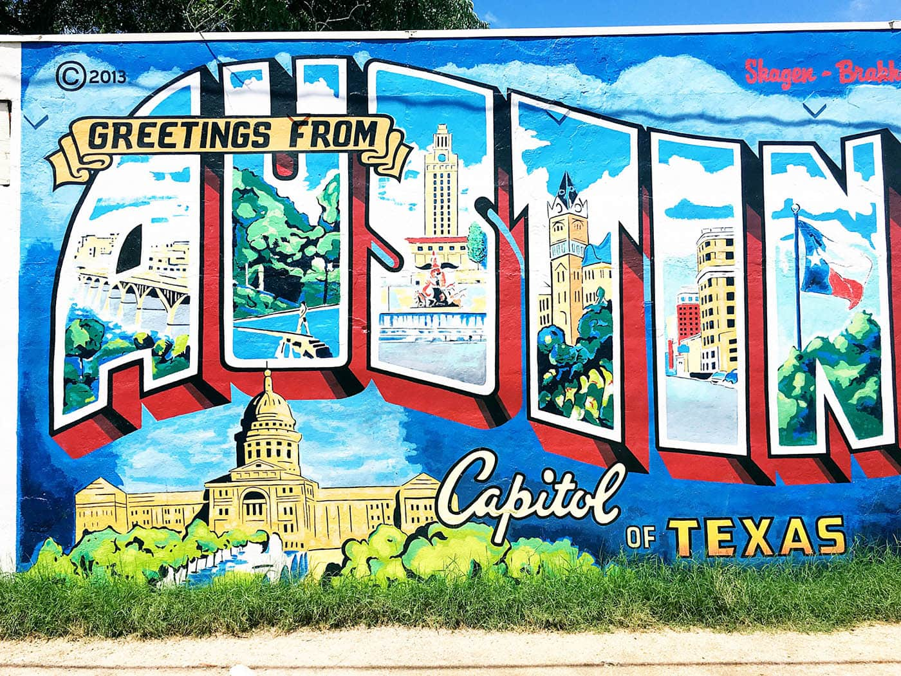
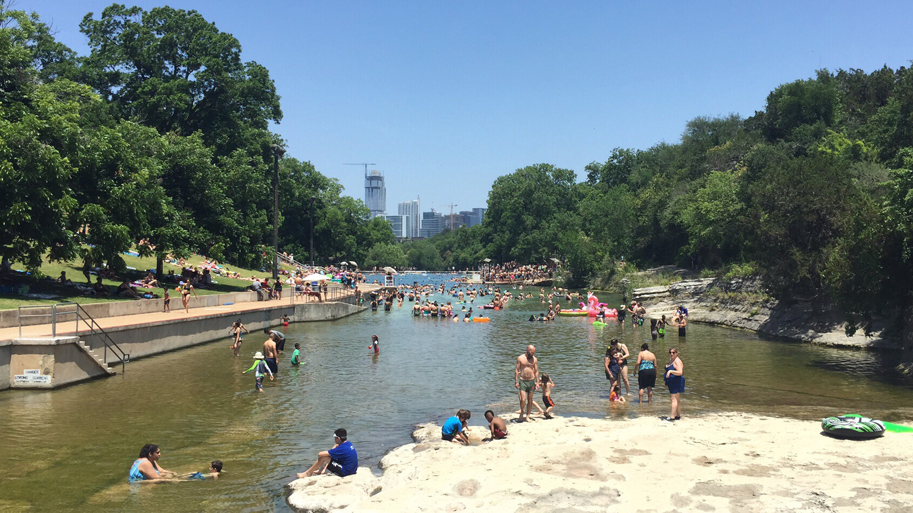
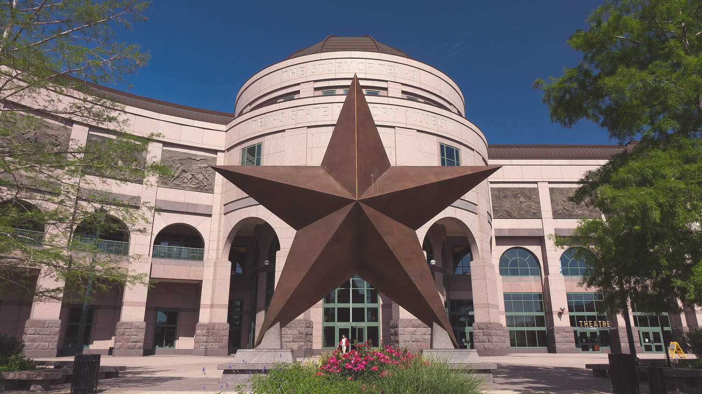
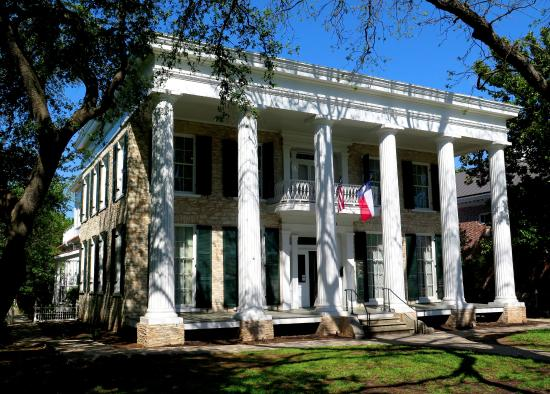
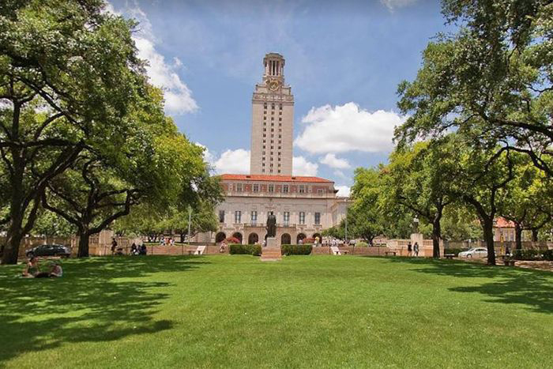

The state’s fourth largest city, Austin originated as the riverside village of Waterloo, in a buffalo-hunting region occupied by Tonkawa and Comanche peoples. In 1839 it was selected by scouts as the site for the permanent capital of the Republic of Texas and renamed to honor Stephen F. Austin. By 1840 Austin was incorporated, with 856 residents. When Mexican invasion threatened Texas in 1842, the government moved to Houston, but the town’s citizens, determined to keep Austin the capital, staged the "Archive War", forcibly retaining government records. The government returned to Austin in 1845, the year in which Texas was admitted to the United States.
The city flourished as a trading center for ranchers and farmers after the arrival of the Houston and Texas Central Railroad and the construction of a bridge across the Colorado River in 1871. A flood in 1900 caused destruction of the bridge. With the harnessing of the river for flood control and power in the early 1900's, industry began to develop. Austin Experienced dramatic growth during the 90's, fueled largely in part by high-ttech industries. This growth is still happening today, with Austin having the nation's fifth largest population increase over the past decade (2010 - 2019).
The fourth largest springs in Texas is located in Zilker Park. For thousands of years the springs were a gathering place for native americans. Spanish explorers wrote in 1714 that wild horses were numerous there. The springs were named after William Barton, an early settler in the area.
Visit the official website here.
The Bullock Texas State History Museum is dedicated to interpreting the continuously unfolding "Story of Texas" to the broadest possible audience through meaningful education experiences. The first floor exhibition explores more than 16,000 years of Texas history. The third floor explores land, culture and technology in Texas and includes sections dedicated to Texas ranching, oil, civil rights, science and space exploration, as well as Texas sports and music.
Visit the official website here.
The Neill-Cochran House Museum is home to two of the ten oldest buildings still standing in Austin. This museum tells the story of the Austin's first decades as a growing capitol city through the beginning of the 20th century. Two rotating Exhibit galleries delve into art history, material culture, and US and Texas history.
Visit the official website here.
At one time it was the tallest capitol building in the nation. The Texas Capitol is widely recognized as one of the nation's most distinguished state capitols. It was placed on the National Register of Historic Places in 1970 and designated a National Historic Landmark in 1986.
Visit the official website here.
Founded in 1883, the University of Texas was inducted into the Association of American Universities in 1929, becoming only the third university in the American South to be elected. A Public Ivy, it is a major center for academic research, with research expenditures totaling $679.8 million for fiscal year 2018.[11][12] The university houses seven museums and seventeen libraries, including the LBJ Presidential Library and the Blanton Museum of Art, and operates various auxiliary research facilities, such as the J. J. Pickle Research Campus and the McDonald Observatory.
Visit the official website here.